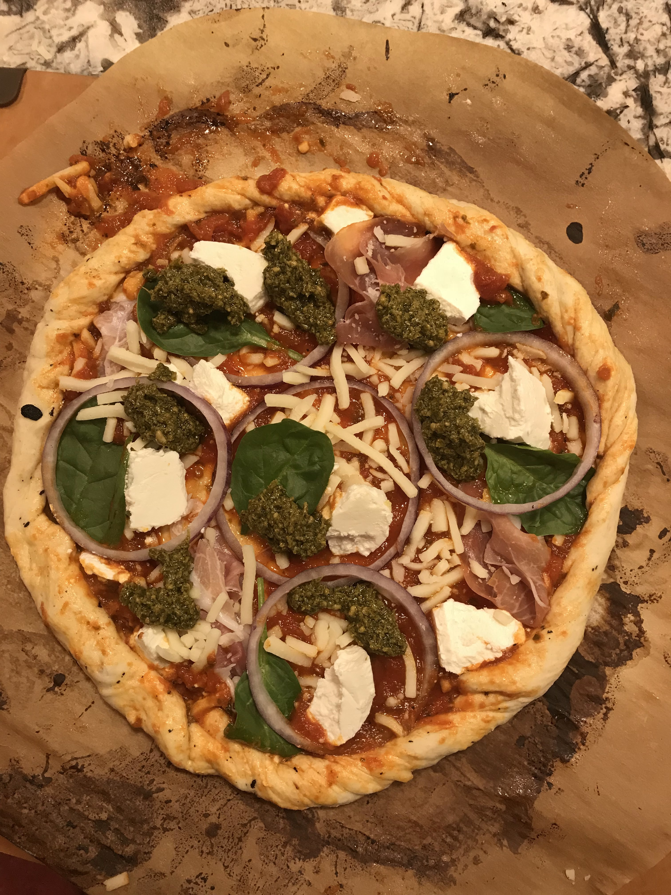
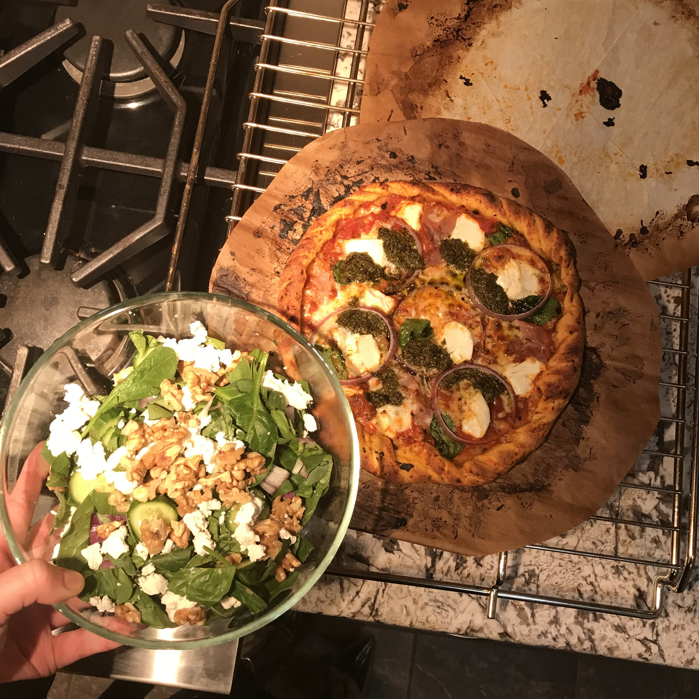
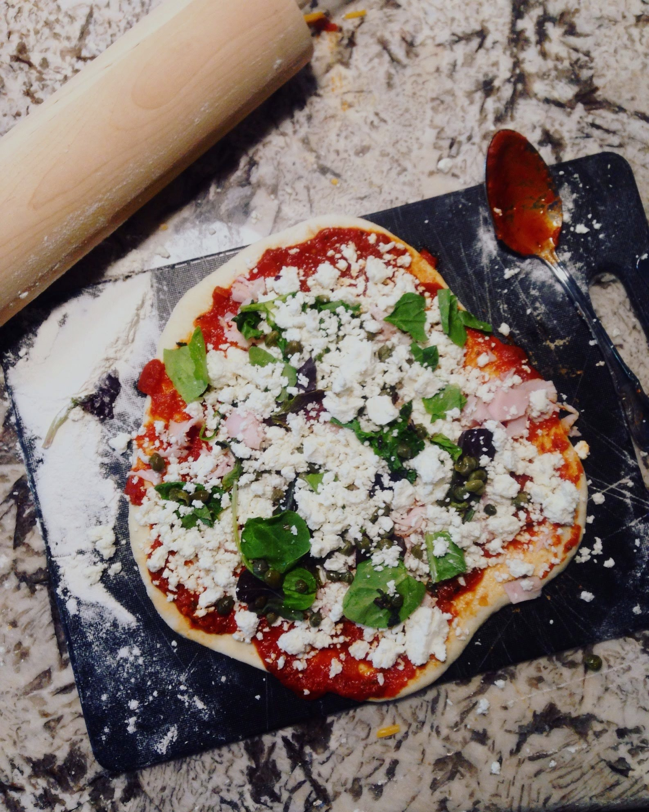
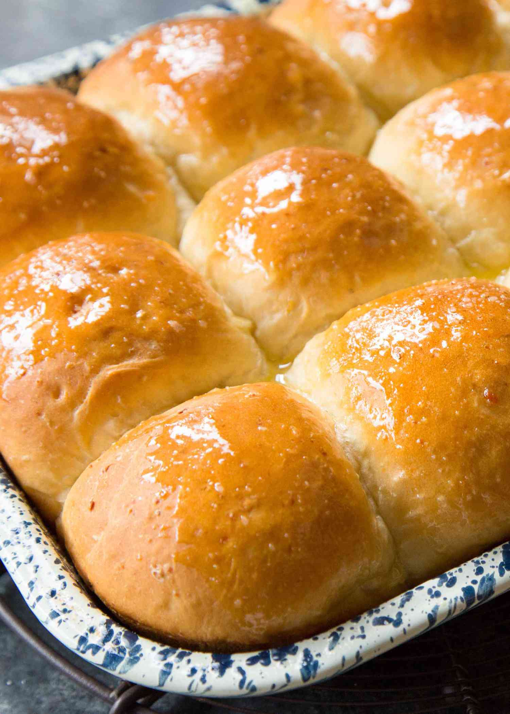
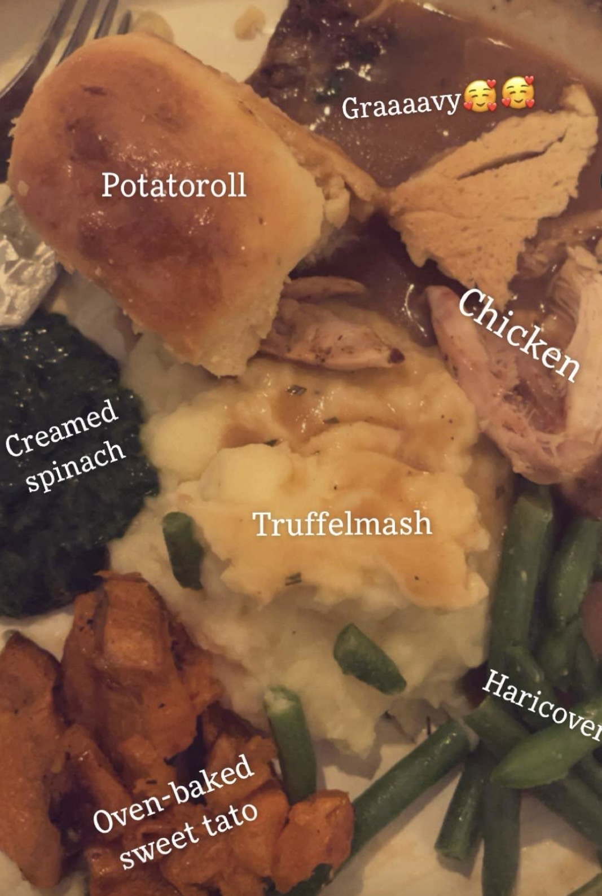

Pizza
Pizzadeg (Leila Lindholm´s grundrecept)
Detta är ett recept jag regelbundet återgår till. När jag reser till New York och hälsar på min
värdfamilj är hemmagjord pizza alltid efterfrågat, det är ett högt betyg ifrån en New Yorker.
På min sida finner du grundreceptet och en tabell med ingredienser per portion.
Receptet kommer som sagt ifrån Leila Lindholm, grundrecept och inspiration för "toppings" finner du på
hennes hemsida, här
I detta recept används durumvete, det är detta mjöl som ger pizzan frasig kant och botten. Det är dock
inte alltid jag har det hemma, så du kan skippa durumvete och byta detta till vetemjöl.



Du behöver:
| Ingredienser |
4 Pizzor |
6 Pizzor |
8 Pizzor |
| Färsk jäst |
15 g |
23 g |
30 g |
| Ljummet vatten |
3 dl |
4,5 dl |
6 dl |
| Strösocker |
2 tsk |
3 tsk |
4 tsk |
| Flingsalt |
1 tsk |
1,5 tsk |
2 tsk |
| Olivolja |
2 msk |
3 msk |
4 msk |
| Durumvete |
1 dl |
1,5 dl |
2 dl |
| Vetemjöl |
5 1/2-6 dl |
8 1/4-9 dl |
11-12 dl |
| Har du inte Durumvete byter du detta till Vetemjöl |
Gör såhär:
- Smula jästen i en bunke och lös upp den i vattnet. Tillsätt strösocker, flingsalt och olivolja.
- Tillsätt durumvete och lite vetemjöl i taget och knåda degen i maskin i cirka 10 minuter tills den
är elastisk.
- Strö över lite vetemjöl och jäs degen i bunken under bakduk till dubbel storlek i cirka 30 minuter.
- Sätt ugnen på 250 grader.
- Dela degen i bitar (4,6 eller 8 beroende på hut mycket deg du gjort) och kavla ut dem tunt på mjölat
bakbord.
- Smaksätt med valfri fyllning.
- Grädda i mitten av ugnen i cirka 5 minuter.
Buon Appetito !
Potatorolls
Potatisfrallor med rosmarin & honungssmör
Varje år om kring den amerikanska högtiden Thanksgiving har jag och mina närmaste vänner
"Friendsgiving"-helg. Vi äter samma sak varje år och alla är lika exalterade.
Det som alla längtar efter lika mycket, stora som små, det är potatisfrallorna. Här har vi ett recept
som verkligen säger "lite mer smör". En otrolig fralla som i
konsistensen påminner om brioche eller challah, fast med en hint av rosmarin. Och det bästa av allt,
honungssmöret.
Frallorna penslas med honungssmör med det räcker även till att bre på efter gräddning.
Jag använder samma recept varje år, och varje år glömmer jag att det är i amerikanska mått. Nu har jag
äntligen översatt detta till svenska mått nedan.
Vill ni kika på originalet hittar ni receptet här.
Observera! Detta recept tar ca 3 timmar totalt. Degen ska jäsas i två omgångar.


Till frallorna:
- 1,2 dl vatten, rumstempererat
- ca 7 g torrjäst
- 1 tsk strösocker
- ca 0,8 dl strösocker
- ca 2,4 dl potatismos
- 0,6 dl mjölk
- ca 85 g saltat smör, smält och avsvalnat
- 2 stora ägg
- ca 2½ tsk finhackad färsk rosmarin
- 1½ tsk salt
- ca 540–600 g vetemjöl
Till Honungssmör:
- ca 55–60 g saltat smör, rumstempererat
- 2 msk honung
- lite salt till toppen
Gör såhär:
- Starta jästen - Blanda det rumstempererade vattnet med jästen och 1 tsk socker i bunken till en köksassistent. Låt stå ungefär 5 minuter.
- Blanda degen - Tillsätt resten av sockret, potatismos, mjölk, smält smör, ägg, rosmarin och salt. Rör ihop. Tillsätt först cirka 540 g vetemjöl och blanda tills du har en ganska lös och rufsig deg.
- Knåda - Knåda med degkrok på medellåg hastighet i ungefär 5–7 minuter. Degen ska bli slät och elastisk och börja släppa från bunkens sidor. Den får fortfarande vara lite klibbig och fastna något i botten.
Om den är väldigt kladdig efter några minuters knådning, tillsätt mer mjöl lite i taget. Försök att inte ösa i mjöl direkt – en lite mjukare deg ger fluffigare frallor.
- Första jäsningen - Lägg degen i en lätt smord bunke och täck. Låt jäsa varmt i ungefär 1 timme, eller tills degen blivit ungefär dubbelt så stor.
- Forma frallorna - Klä en ugnsform på ungefär 23 × 33 cm med bakplåtspapper och smörj den lätt. Häll ut degen på ett lätt mjölat bakbord och dela den i 16–20 lika stora bitar.
Forma varje bit till en rund bulle och lägg dem med skarven nedåt i formen.
- Andra jäsningen - Täck formen och låt frallorna jäsa ytterligare ungefär 1 timme, tills de blivit ordentligt puffiga och nästan dubblerats i storlek. Sätt ugnen på 175°C över-/undervärme ungefär 15 minuter innan de jäst färdigt.
- Grädda - Grädda mitt i ugnen i 20–25 minuter, tills frallorna fått fin gyllenbrun färg. Har du en termometer ska innertemperaturen vara ungefär 93°C.
- Honungssmör - Rör ihop det mjuka smöret och honungen till en jämn blandning. Pensla honungssmöret över frallorna medan de fortfarande är varma och strö över lite salt. Låt svalna en liten stund och servera.
Buon Appetito !